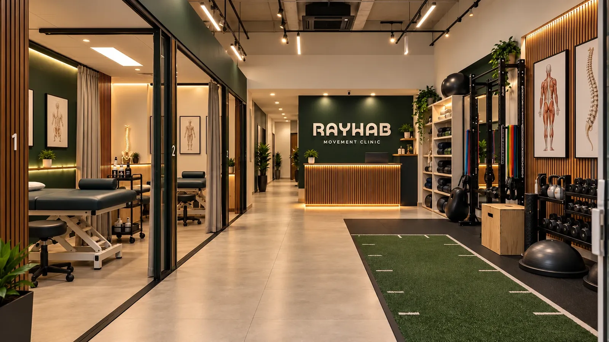

Supporting service
Pain Management
For pain that has lasted, keeps coming back, or has stopped responding to rest. An assessment that looks at the whole picture, an explanation you can use, and a graded plan that rebuilds what the pain has taken away.
For persistent or recurring pain: a clear explanation and a graded plan back to what you want to do.
60 min
First assessment: your history, what provokes and eases the pain, and what it has stopped you doing
Exercise-led
Graded activity and loading, with hands-on techniques where they help you move
In-clinic
& online
Beirut clinic, or remote assessment and program review
First assessment
60 min
Approach
Graded, exercise-led
Delivered
Beirut & online

Progress you can see
What you can do, and how often pain gets in the way, is tracked over time, so change is recorded rather than recalled.
The approach
Pain is real. It is rarely the whole story
Pain that lasts is shaped by more than the tissue: sleep, stress, how much you have been able to move, and what you have been told it means. Rest and passive treatment can ease it for a while. What tends to help over time is understanding it, and gradually doing more of what it has taken away. That is where the time goes here.
Explained, not dismissed
What your pain is likely to mean, and what it does not, so moving stops feeling like a risk.
Graded, not forced
Activity builds from a level you can manage on a bad day, so progress does not depend on a good one.
Built to hand over
A program you can run yourself, and a plan for flare-ups, which are expected rather than a failure.
The rehabilitation process
Six stages, one direction
Not everyone needs all six, and pain rarely improves in a straight line. Setbacks are planned for, not treated as starting again.
01
Assessment
Your history, what provokes and eases the pain, and what it has stopped you doing.
02
Explanation
What is likely driving it, in terms you can repeat to someone else.
03
Settling
Calming a flare enough that useful activity becomes possible.
04
Graded activity
Doing a little more of what matters, at a pace the pain allows.
05
Capacity
Building strength and tolerance so ordinary days stop provoking it.
06
Self-management
A program, a flare-up plan, and a review point.
Who this is for
Persistent or recurring pain
Back, neck, shoulder, hip or knee pain that has lasted for months, or keeps returning.
Pain that limits training
When rest settles it and going back to training brings it straight back.
People who want a plan
Where the goal is understanding the pain and managing it, not open-ended appointments.
What the program includes
- Full assessment of the pain and how it affects your day
- Plain explanation of what is likely driving it
- Hands-on and symptom-control techniques where useful
- Graded activity and exercise program
- Strength and tolerance building
- A flare-up plan you can follow
- Home program and review point
Rehabilitation outcomes vary between individuals. Rayhab does not promise a specific result or timeline.
Consultation types
Start with an assessment
Initial assessment
Start hereFull assessment, explanation, and the first version of your plan.
- Duration
- 60 min
- Location
- Beirut clinic
Follow-up session
Coached graded activity, progression, and updates to your home program.
- Duration
- 45 min
- Location
- Beirut clinic
Online consultation
For patients outside Lebanon: assessment by video, program design and review.
- Duration
- 40 min
- Location
- Video call
Experience behind the work
5+ yrs
Clinical and movement-based experience
Amman
Sports rehabilitation with basketball and football athletes
No case studies published yet
Consented patient journeys are published for scoliosis rehabilitation, where the clinic has permission to do so. Nothing is written up for this service yet, and an empty section is more honest than a borrowed quote.
Common questions
Not finding your question? Ask the clinic
No. You can book directly. If anything in your history needs a medical opinion or imaging, you will be told at the first appointment.
No. Rayhab is a physiotherapy clinic. Medication and injections are a matter for your doctor, and the plan here can run alongside them.
Some activity may be uncomfortable, and how much is discussed and agreed with you in advance. The aim is to build what you can do without setting off a flare.
Sore or injured: reading the differenceIt depends on how long the pain has been there and how much it affects you. You will get an honest estimate at the first appointment, and the aim is a plan you can run yourself.
How long does rehabilitation actually take?Then you will be told, and pointed toward the right person. Recognizing what is not ours to treat is part of the assessment.
Start with an assessment
Sixty minutes in Beirut or online. You leave understanding the pain and holding a plan.